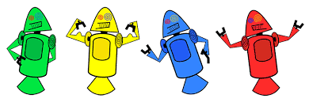

HISTORIA DO MASCOTE DO ANDROID
Provavelmente você sabe que o sistena operacional Android, mantido pelo Google é um dos mais utilizados para dispositivos móveis em todo o mundo. Mas talvez você não saiba que o seu simpático mascote tem um nome e uma história muito curiosa? Pois acompanhe esse artigo para aprender muita coisa sobre esse robozinho
A PRIMEIRA VERSÃO
A primeira tentativa de criar um mascote surigu em 2007 e veio de um desenvolvedor chamado Dan Morrill. Ele conta que abriu um Inkscape
(software livre para vetorizção de imagens) e criou sua própria versão de robô. O objetivo era apenas personalizar o sistema aenas para a sua equipe, não existia nenhuma solicitação da empresa para a criação de um mascote.

SURGE UM NOVO MASCOTE
A ideia de ter um mascoote foi amadurecedo a missão foi passada para uma profissional da área. A ilustradora Russa Irina Blok, também funcionária do Google, ficou com a missão de representar o pequeno robô de uma maneira mais agradável.

A ideia principal da Irina era representar tudo graficamente com poucos traços e de forma mais chapada. o desenho também deveria gerar indentificação rápida com quem o olha. Surgiu então o Bugdroid, o novo mascote do Android
A principal inspiração para os traços do novo Bugdroid veio daqueles bonequinhos que ilustram portas de banheiro para indicar o gênero de cada porta. Conta a lenda que a artista estava criando em sua mesa no escritório do Google e olhou para o lado dos banheiros e a indentificação foi imediata: simples, limpo e objetivo.